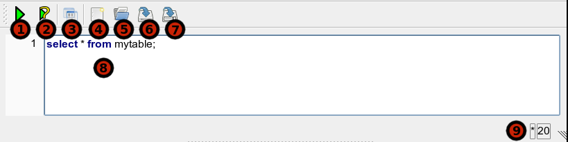

SQL Editor
A comfortable text editor component with line numbers and
syntax highlighting. Editor can be (un)hidden by Ctrl+E shortcut.

- Run SQL: perfrom a statement (selected or under cursor).
- Run Explain: perform a EXPLAIN PLAN for the chosen statement.
- Create View: create i view (open a dialog) from the chosen statement.
- New: clean the editor and forget any changes.
- Open: open a sql file.
- Save: save editor content.
- Save As: save editor content under the given file name
- Write your statements and SQL commands here. Remember that there
is a command separator – semicolon (;) – in SQL language.
- File modified indicator and the cursor position.